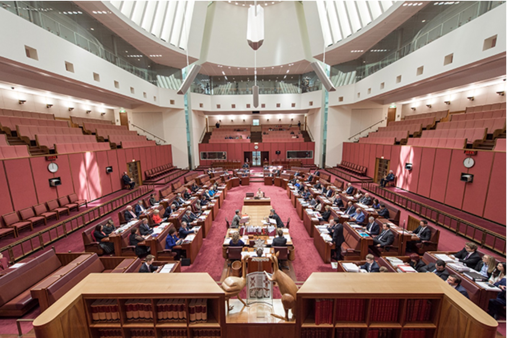
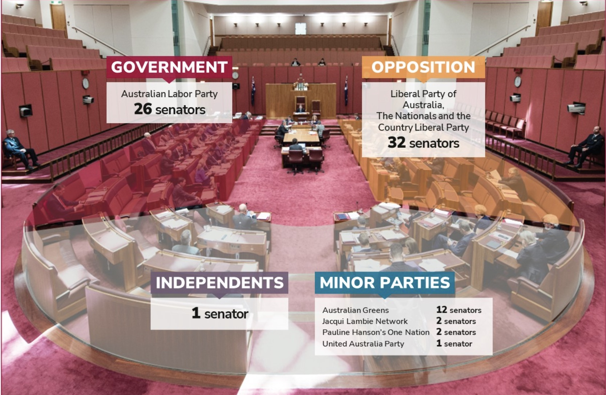

The Senate has a total of 76 senators, 2 represent each territory, the Senators represent the views of Australians and discuss the matters of international and national importance. When the national laws are changed via a referendum it is then passed on to the House of Representatives and after that if the Senate and the House agree in identical form then the bill is passed on to the Governer-General for him to give the Royal Assent only then it will become a law/Act.
The Senate's colour is inspired from the House of Lords in the British Parliment as well and the light red colours are from the colours of the desert landscape of Australia.
The U-shape of the Senate is different to the House because in the Middle is the President of the Senate The Honourable Sue Lines and around her are the 76 senators, on her right side there are the Government Senators and on her left side are the Opposition Senators, then the Leader of the Government in the Senate and the Leader of the Opposition in the Senate sit at a table in the centre.
The composition of the Senate is 26 Labor Party Government senators, 32 Coalition (Opposition) senators, 12 Australian Greens senators, two Paul Hansen's One Nation senators, two Jacqui Lambie Network senators, one United Australia Party senator, and one Independent senator. The image at the bottom of this page on the right hand side shows the seating arrangment for the different senators in the Senate.
The job of The Honourable Sue Lines who is the current President of the Senate is to guide and regulate proceedings in the Senate, to oversee administration of the Department of the Senate and together with the Speaker of the House of Representatives to regulate the Department of Parliamentary Services.
The Senate has it's own Clerk who is responsible for being the Principal Advisor to all senators on matters relating to the business and procedures of the Senate and its commitees. When there is meeting in the Senate the Clerk sits at the table together with the President of the Senate.
The Party whip in the Senate takes on the responsibility of managing pretty much the same things as the Party Whip in the House their responsibililty is to count and record the amount of votes in a division, providing advice for the other senators, ensuring that party decisions have been made and many many more. The Party Whip's name originates from the British Parliament like so many of the other things including the colours of the House and Senate, the reason it is called Whip is because of the sport fox-hunting and the name Whip was used in the British Parliament since way back in the 17th century.
The job that the Usher of the Black Rod undertakes is escorting the President of the Senate in to and out of the Senate, while carrying the Black Rod, assisting the President to maintain flow of the Senate, recording the attendance of senators, and much more. The Usher of the Black Rod is also required to be in the Senate at the beginning of each sitting day*.
 